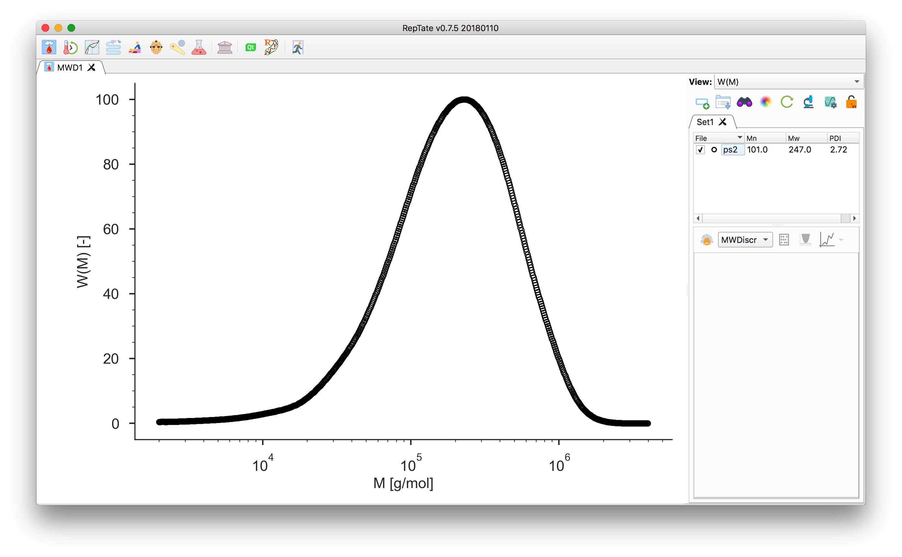
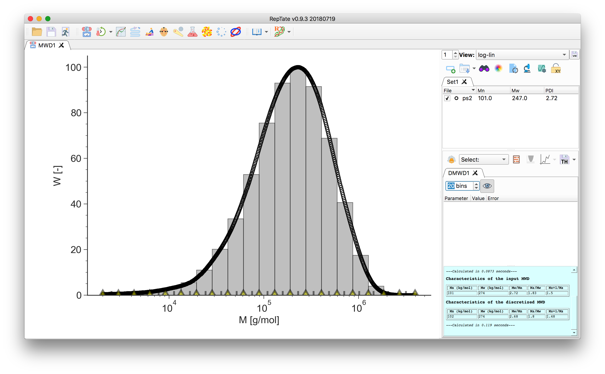

MWD Tutorial: Graphical User Interface¶
Discretization of a GPC molecular weight distribution
Start RepTate and create a new MWD Application :

Drag and drop a file with a
.gpcextension (see Data Files), e.g.ps2.gpcin thedata/PS_Linear_Polydisperse/folder.Select the “Molecular Weight Discretization” theory and press
 to create it.
to create it.
The area of each bin corresponds to the area under the data curve delimited by the bin edges. The number- and weight-average molecular weight, together with the higher order moments of the distribution, are calculated and reported in the theory text-box for both the input data and the discretized MW:

Adjust the number of molecular weight bins by changing the value in the theory panel. By default they are equally spaced on a logarithmic scale:
In the bottom of the plot, the grey tick marks indicate the bin molecular weight. For each bin \(i\), it is taken as the weight-average molecular mass value across the bin width
\[M_{w,i} = \frac{\sum w_j M_j}{\sum w_j}.\]The yellow markers indicate the bin edges, they can be dragged around:

Hint
To increase density of bins in an region, say the high M, we can set the number of bins to 1, then move the bin edges to the region of interest and increase the number of bins. This will increase the number of bins between the \(M_\mathrm{min}\) and \(M_\mathrm{max}\).
To save the discretized molecular weight, click the button.
The output file contains a header with the moments \(M_n\), \(M_w\) and the PDI, and two columns. The first column is the molecular weight \(M_{w,i}\) as indicated by the grey tick marks, the second column is the value of the area of the covered by the bin, \(\phi_i\).
The sum of the areas should equal 1:
\[\sum \phi_i = 1.\]
{kind=link}
{kind=link}
{kind=link}
{kind=link}
{kind=link}